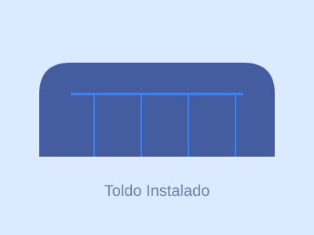
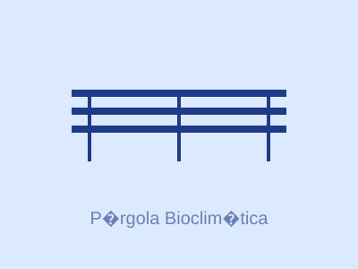
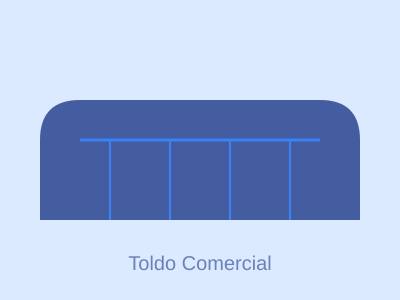
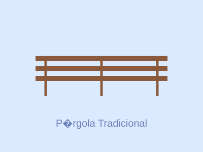
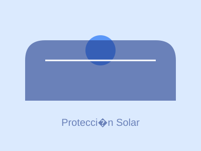

Nuestros Trabajos
Aquí puedes ver algunos de nuestros proyectos realizados. Cada trabajo es único y adaptado a las necesidades de nuestros clientes.

Toldo para Terraza
Instalación de toldo retráctil en terraza residencial

Pérgola Bioclimática
Pérgola bioclimática con sistema de lamas orientables

Cortinas de Cristal
Sistema de cortinas de cristal para porche

Toldo Comercial
Instalación de toldo para establecimiento comercial

Pérgola Tradicional
Pérgola de madera con sistema de sombra

Sistema de Protección Solar
Solución integral de protección solar para vivienda